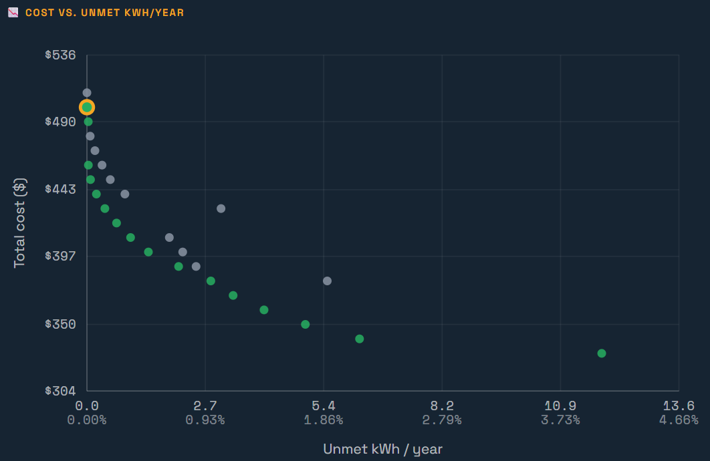

This app helps design small individual solar plus storage systems. Its main use is for households in the tropics that have no other access to electricity and want a system big enough to meet their cooking needs in addition to lighting and other household loads.
One of the main insights from running this is the trade-off between cost and getting the last little bit of reliability. This is especially true outside of the tropics, but the app doesn't consider backup generators. The app is good at calculating numbers, but what a user will prefer in terms of cost versus reliability is subjective. Everyone may have a different preference. With a little flexibility regarding cooking, all of the other household energy needs can be met with 100% reliability.
Procedure
- Click on your location on the map or type in the name of the nearest town.
- Check that the cost data is consistent with what is available locally.
- Enter your daytime and nighttime target loads. (Hint: either put in the minimum load that you want to be able to meet every day or a higher load and let the app tell you how much energy would be available on cloudy days.)
- Enter many different sizes for the PV and battery. You will want to iterate, but the more sizes you put in the easier it is to understand the design trade-offs.
- Hit the Run Simulation button
- Keep iterating on the System Configurations until you get a nice curve like:

The green dots are the least cost system for that level of reliability. Another way to say that is that they are the most reliable system for that cost. By clicking on a dot, you can see more information about that system in the tables that are below the graph.
The Cost Frontier table shows all the systems that are green dots in the graph. Marginal $/kWh is basically the slope between the chosen green dot and the next less expensive one. It shows how much it costs to get the last increment of reliability.
The Day-by-day Calendar shows how much you might need to conserve on cloudy days.
The Matrix has a Drop-down toggle that lets you look at the reliability and cost of all the systems.
The Report can be downloaded and read by MS Word or any other text app.
The final table has data on all the systems, not just the green optimal systems. The buttons on the right let you download a .csv file that can be read in Excel and has all the (8760) hourly data for that system. The Unmet kWh button as a histogram showing how much conservation might be needed on how many cloudy days.